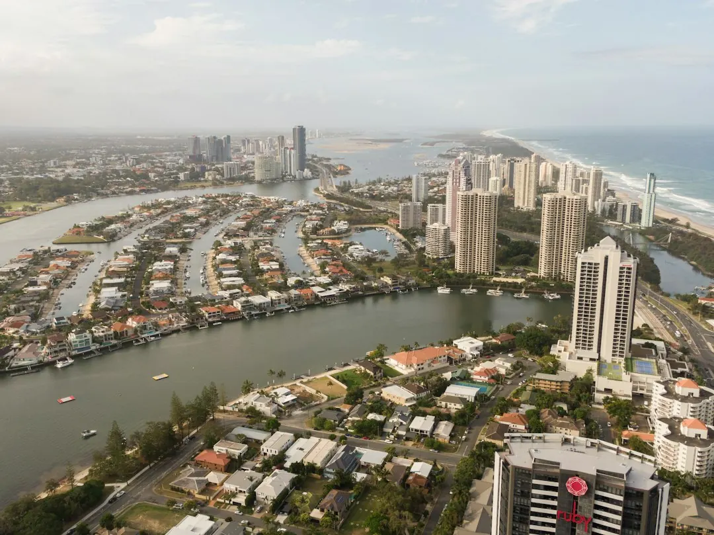

A Gold Coast pool project should be planned around the block, access, pool type and approval sequence. Custom concrete, infinity edge, plunge and renovation work each raise different questions about excavation, engineering, drainage, finishes and barriers. Building approval comes before digging, and the barrier must comply before the pool is filled to 300 mm or more. Ask for an itemised quote, confirm licensing and insurance, and sign a written contract for work above $3,300.
For homeowners comparing pool builders gold coast options, the practical decision is how well the proposed design, site work, approvals and outdoor living details fit the property.
Pool Builders Gold Coast Explained
The design brief should describe more than the preferred shape. The Pool Builders Gold Coast website asks owners to provide the suburb, pool type, timing and site notes, while a sketch or inspiration photo is optional. That gives a builder enough context to discuss placement, access and the likely design questions before detailed plans are prepared.
Custom concrete, plunge and infinity edge pools suit different conditions. A compact plunge pool may be considered for a small, townhouse or narrow-access yard. An infinity or wet-edge design needs particular attention to views, slopes and waterfront settings. A bespoke concrete pool allows the shape and placement to respond to the block rather than forcing the site into a standard layout.
- Describe the available yard, preferred position and access route.
- State whether the project includes a spa, water feature, heating, automation or lighting.
- Explain the intended timing, especially if excavation or concrete work may be affected by weather.
Match the pool type to the site questions
Pool selection is also a construction and budgeting decision. In-situ concrete work can be shaped around the property, with the build sequence involving excavation, shotcrete and an interior finish. A luxury specification may combine the pool with a spa, water features, heating, automation and lighting, so those inclusions should be discussed together rather than treated as late additions.
Gold Coast blocks can present different practical conditions. Beachside lots, canal properties and hinterland slopes do not create the same excavation, drainage or access conversation. The published guidance specifically identifies Hope Island canal blocks, Mudgeeraba sloping lots, Palm Beach and Tallai as examples where a comparable completed project may help an owner ask better questions.
For a dated concrete pool, renovation may involve new finishes, coping, tiles, lighting and equipment. Ask whether the proposed scope is a renovation of the existing structure or a substantially new build, and have each item written into the quote.
Compare quotes by scope, not only price
A free quote is useful only when its inclusions can be compared with another quote on the same basis. Check excavation, rock, engineering, access, spoil handling, retaining work, drainage, the pool finish and the barrier. Tight beachside access may affect machinery and spoil handling, while a sloping block may require retaining walls or extra engineering.
| Question | Why it matters | What to record |
|---|---|---|
| What site work is included? | Ground and access conditions vary across the coast. | Excavation, rock, spoil, retaining and engineering. |
| What finishes and equipment are included? | Features can change the completed specification. | Tiles, coping, lighting, heating and automation. |
| Who manages the work? | A named contact makes changes and delays easier to track. | Site supervisor, communication method and rescheduling process. |
Before signing, ask what the price leaves out and how variations will be handled. The published guidance recommends checking that the builder's licence covers the pool work in the contract. For work above $3,300, start only after both parties have signed a written, dated contract.
Put approvals and the barrier in the right order
Building approval comes before any digging. That sequence should be reflected in the programme, quote and contract, because design changes after excavation can affect the work already planned. The barrier is a separate practical checkpoint. It must be compliant before the pool is filled to 300 mm or more.
Ask who is responsible for the approval documents, engineering information and barrier arrangements, and request those responsibilities in writing. The quote should also make clear whether fencing, gates and related site work are included or excluded. These questions are more useful than assuming every proposal handles approvals in the same way.
Weather also belongs in the timing discussion. Gold Coast summer storms can pause digging and concrete stages at short notice. Ask who will notify you when work is rescheduled and who checks the site after heavy rain.
Who this guide applies to
This guide is for Gold Coast homeowners planning a custom concrete pool, infinity or wet-edge pool, luxury pool, plunge pool or renovation. It is especially relevant when the property has limited access, a slope, a waterfront setting, an existing concrete pool or plans for coordinated outdoor living.
Owners considering paving, shade, glass fencing or landscaping should raise those elements from the first sketch. The published planning guidance treats the area around the water as part of the overall project, rather than something to add after the pool and barrier have been decided.
For a focused comparison of concrete construction questions, see the related guide to concrete pool builders on the Gold Coast. Use both guides as preparation for questions, then check the final scope, licence details, inclusions and contract before committing.
- Define the brief. Record the pool type, preferred position, access conditions, features and intended timing.
- Request comparable quotes. Ask for the same written scope, including site work, finishes, equipment, barriers and exclusions.
- Check responsibility. Confirm who handles approval information, site supervision, weather updates and changes.
- Review the contract. Check the builder's licence covers the work and sign a written, dated contract before work above $3,300 starts.
| Question | Why it matters | What to record |
|---|---|---|
| What site work is included? | Ground and access conditions vary across the coast. | Excavation, rock, spoil, retaining and engineering. |
| What finishes and equipment are included? | Features can change the completed specification. | Tiles, coping, lighting, heating and automation. |
| Who manages the work? | A named contact makes changes and delays easier to track. | Site supervisor, communication method and rescheduling process. |
Common questions
Can a design be planned without finished drawings? The published enquiry process says a rough idea is enough to begin, and a sketch or inspiration photo is optional. The design detail can then be discussed around the property, pool type and timing.
Why should the quote mention access and excavation? Gold Coast properties vary from beachside and canal sites to sloping hinterland blocks. Access, rock, spoil handling, retaining and engineering can change the work required, so they should be stated rather than left as assumptions.
When must the pool barrier comply? Building approval comes before digging, and the barrier must be compliant before the pool is filled to 300 mm or more. Ask who is responsible for the barrier and record that responsibility in the written scope.
What should be checked before signing? Compare itemised scopes, confirm the licence covers pool work, identify exclusions and ask who supervises the site. For work above $3,300, use a written, dated contract signed by both parties.
This guide covers pool-type selection, Gold Coast site questions, quote comparisons, approvals, barriers and contract checks.